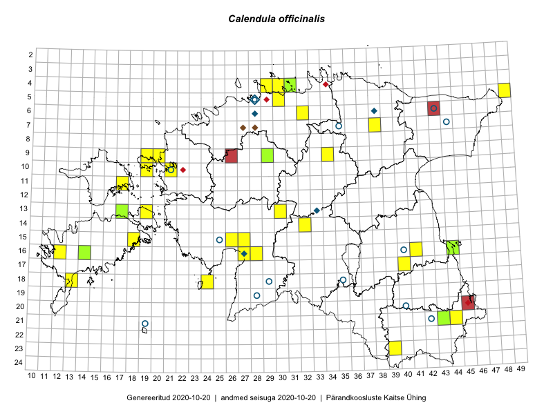

Calendula officinalis — harilik saialill
Kaardile koondatud taksonid: Calendula officinalis L. (44)

Kaart põhineb 44 kirjel, neist:
vaatlusi 37
eksemplare 7
Kaasaegsed1 leiukohad asuvad 30 ruudus.
Andmed “Eesti taimede levikuatlasest”,2 sulgudes ruutude arv:3
● 1971–2005 (10)
○ 1921–1970 (0)
△ kuni 1920 (0)
+ hävinud (0)
? kaheldav (0)
Lisaruudud teistest andmebaasidest:4
ELF: 2006– . . . (0)
PKÜ: 2006– . . . (0)
ELF: 1971–2005 (0)
PKÜ: 1997–2005 (2)
| Ruut | Vaatleja(d) | Vaatlusaeg | Kirje PlutoFis |
|---|---|---|---|
| 16-41 | Peedu Saar, Eerik Leibak | 2015-07-30 | ruut/ala: Calendula officinalis L. |
| 16-44 | Toomas Kukk, Eerik Leibak | 2015-07-29 | ruut/ala: Calendula officinalis L. |
| 13-19 | Kadri Tali | 2015-06-03 | ruut/ala: Calendula officinalis L. |
| 18-13 | Oliver Parrest | 2015-07-15 | punkt: Calendula officinalis L. |
| 06-32 | Eerik Leibak | 2016-06-25 | ruut/ala: Calendula officinalis L. |
| 09-34 | Ott Luuk, Eerik Leibak | 2016-07-25 | ruut/ala: Calendula officinalis L. |
| 07-38 | Liina Oja, Eerik Leibak | 2016-07-28 | ruut/ala: Calendula officinalis L. |
| 04-30 | Sander Laherand, Eerik Leibak | 2016-07-29 | ruut/ala: Calendula officinalis L. |
| 04-29 | Sander Laherand, Tõnu Ploompuu, Nele Jõessar | 2016-07-25 | ruut/ala: Calendula officinalis L. |
| 15-18 | Mari Reitalu, Hannes Pehlak | 2016-08-26 | ruut/ala: Calendula officinalis L. |
| 13-30 | Tõnu Ploompuu, Hannes Pehlak, Marko Veinbergs | 2016-07-21 | ruut/ala: Calendula officinalis L. |
| 10-19 | Ott Luuk, Meeli Mesipuu | 2016-09-15 | ruut/ala: Calendula officinalis L. |
| 09-19 | Meeli Mesipuu, Ott Luuk | 2016-09-16 | ruut/ala: Calendula officinalis L. |
| 16-41 | Peedu Saar, Eerik Leibak | 2015-07-30 | punkt: Calendula officinalis L. |
| 05-49 | Tiit Hallikma, Toomas Kukk | 2015-07-22 | punkt: Calendula officinalis L. |
| 05-30 | Ott Luuk, Peedu Saar | 2015-09-04 | punkt: Calendula officinalis L. |
| 16-44 | Toomas Kukk, Eerik Leibak | 2015-07-29 | punkt: Calendula officinalis L. |
| 09-34 | Ott Luuk, Eerik Leibak | 2016-07-25 | punkt: Calendula officinalis L. |
| 04-30 | Sander Laherand, Eerik Leibak | 2016-07-29 | punkt: Calendula officinalis L. |
| 07-38 | Liina Oja, Eerik Leibak | 2016-07-28 | punkt: Calendula officinalis L. |
| 21-44 | Karin Kikas, Peedu Saar | 2016-08-18 | punkt: Calendula officinalis L. |
| 21-44 | Karin Kikas, Peedu Saar | 2016-08-18 | punkt: Calendula officinalis L. |
| 16-27 | Indrek Tammekänd | 2016-08-27 | punkt: Calendula officinalis L. |
| 15-18 | Mari Reitalu, Hannes Pehlak | 2016-08-26 | punkt: Calendula officinalis L. |
| 18-24 | Ott Luuk, Peedu Saar | 2016-09-21 | punkt: Calendula officinalis L. |
| 09-19 | Ott Luuk, Meeli Mesipuu | 2016-09-16 | punkt: Calendula officinalis L. |
| 04-29 | Sander Laherand, Tõnu Ploompuu, Nele Jõessar | 2016-07-25 | punkt: Calendula officinalis L. |
| 10-19 | Meeli Mesipuu, Ott Luuk | 2016-09-15 | punkt: Calendula officinalis L. |
| 16-27 | Indrek Tammekänd | 2015-07-18 | punkt: Calendula officinalis L. |
| 13-30 | Indrek Tammekänd, Leili Mihkelson | 2016-10-19 | punkt: Calendula officinalis L. |
| 15-26 | Indrek Tammekänd | 2016-07-08 | punkt: Calendula officinalis L. |
| 15-27 | Indrek Tammekänd | 2017-09-23 | punkt: Calendula officinalis L. |
| 11-17 | Toomas Kukk, Indrek Tammekänd | 2017-09-11 | punkt: Calendula officinalis L. |
| 16-12 | Toomas Kukk, Tiit Hallikma, Mari Reitalu | 2018-08-29 | punkt: Calendula officinalis L. |
| 14-32 | Indrek Tammekänd | 2019-08-19 | punkt: Calendula officinalis L. |
| 10-21 | Ott Luuk | 2019-09-19 | punkt: Calendula officinalis L. |
| 09-20 | Ott Luuk | 2019-09-18 | punkt: Calendula officinalis L. |
| 16-44 | Toomas Kukk, Eerik Leibak | 2015-07-29 | TAA0135630: Calendula officinalis L. |
| 16-44 | Toomas Kukk, Eerik Leibak | 2015-07-29 | TAA0135631: Calendula officinalis L. |
| 04-31 | Toomas Kukk, Sander Laherand | 2016-08-31 | TAA0136263: Calendula officinalis L. |
| 16-14 | Raivo Kalle | 2014-08-26 | TAA0119790: Calendula officinalis L. |
| 13-17 | Renata Sõukand | 2014-07-26 | TAA0119720: Calendula officinalis L. |
| 21-43 | Raivo Kalle, Renata Sõukand | 2019-08-16 | TAA0148202: Calendula officinalis L. |
| 09-29 | Laura-Liisa Vulf | 2018-07-27 | TALL C011652: Calendula officinalis L. |
Kaasaegsed leiukohad (tähistatud värvitud ruutudega) põhinevad peamiselt 2014–2019 välitööandmetel. Väiksemal määral on andmebaasi kantud vanemaid leiuandmeid aastatest 2006–2013.↩︎
Kukk, T., Kull, T., Eesti taimede levikuatlas. Eesti Maaülikool, Põllumajandus- ja Keskkonnainstituut, Tartu, 2005.↩︎
NB! 2005. aasta atlase andmestikus katavad uuemad leiud vanemaid. Näiteks kui liik on ruudus registreeritud 1971–2005, siis pole võimalik öelda, kas ta oli sellest ruudust teada ka enne 1970. aastat. Vana atlase andmetel hävinud ja kaheldavaid leiukohti pole hilisemate (taas)leidude põhjal korrigeeritud.↩︎
Eestimaa Looduse Fondi (ELF) ja Pärandkoosluste Kaitse Ühingu (PKÜ) andmebaasid sisaldavad inventeeritud koosluste kirjeldusi ja liigiloendeid. Neist andmekogudest on kaardile lisatud lisatud vaid need ruudud, millest uue atlase andmekogus taksoni kohta kirjeid veel pole. Kõrvale on jäetud teadaolevalt kaheldavad määrangud. Kaartidel katavad uuema perioodi andmed vanemaid, PKÜ omad ELFi omi. Kattumise tõttu võib kaardil näha olla vähem mingi kategooria ruute kui legendis olev arv näitab. ELFi ja PKÜ andmed ei kajastu hetkel vaatluste tabelis ega ruutude liigiloendites.↩︎